Himayah · /
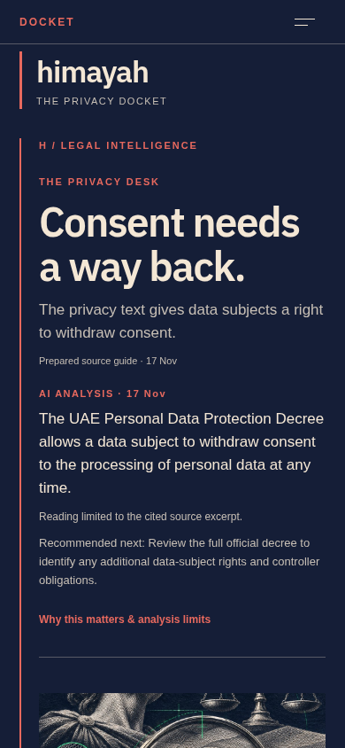
Actual Expo Web initial states. No customer input, model result, physical-device verification or full product acceptance is implied. Source and capture conditions: manifest.json.

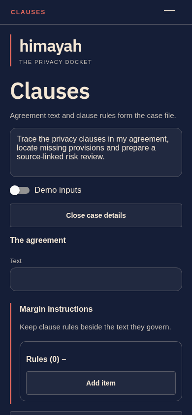
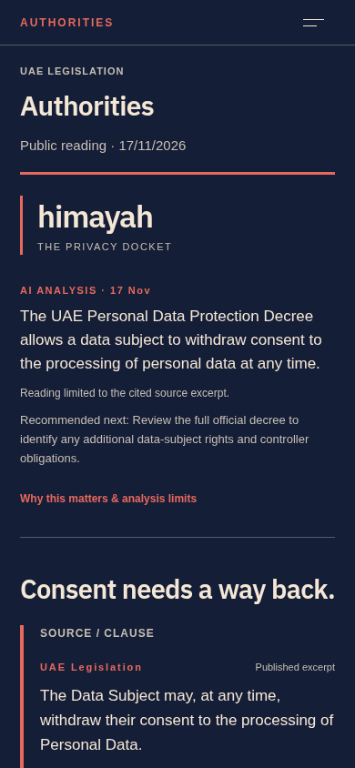
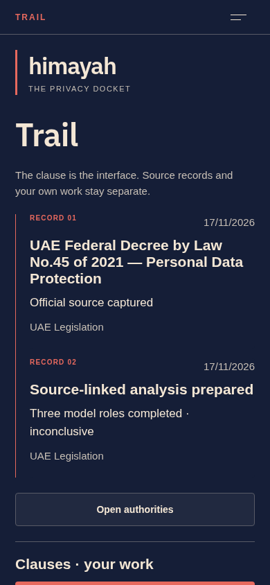
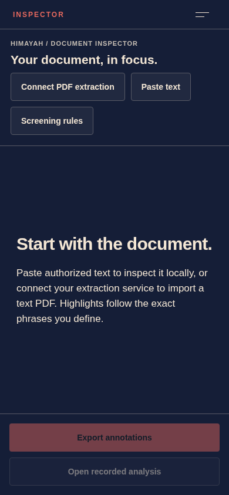
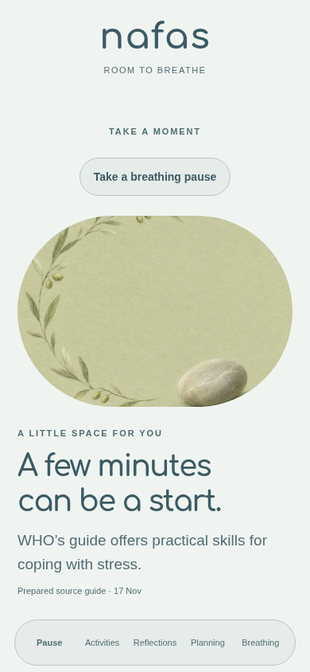
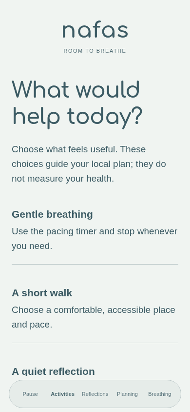
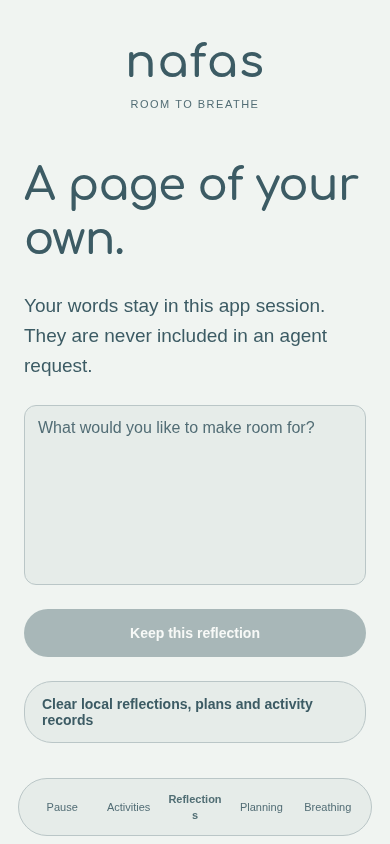
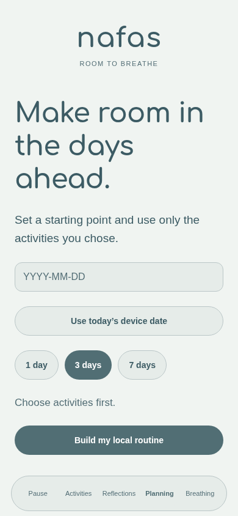

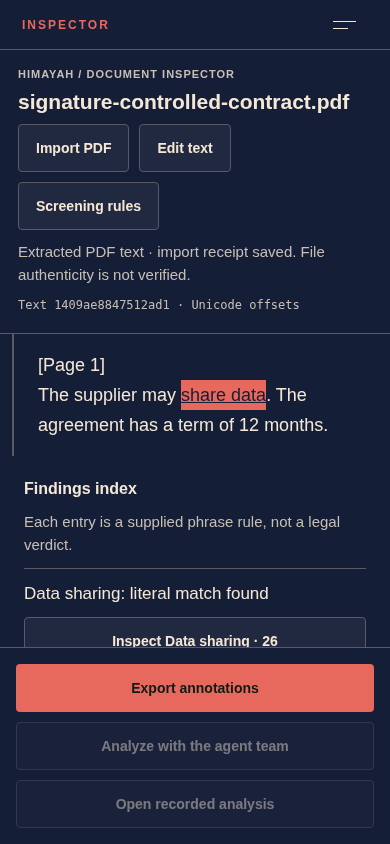
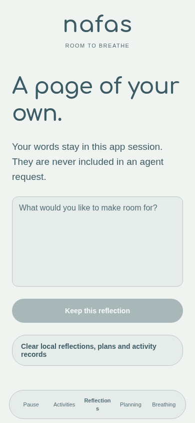